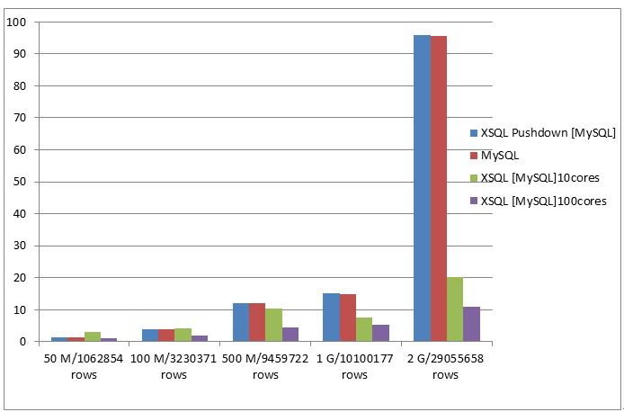
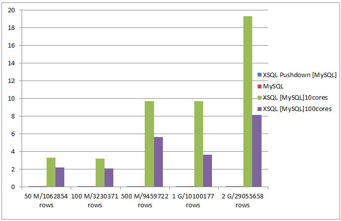
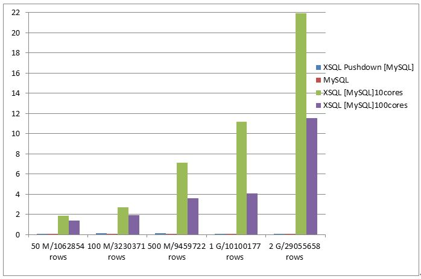

MySQL性能测试报告
MySQL性能测试报告是基于业务数据的性能测试报告。
测试环境
操作系统： CentOS release 6.2 （Final）
虚拟机版本： Java HotSpot(TM) 64-Bit Server VM (build 25.60-b23, mixed mode)
xsql配置：
- Driver Memory： 5G
- Executor Inatances: 10或100
- Executor Memory： 5G
测试目标
本次测试涵盖性能测试与功能测试，主要包含两个目的：
展示XSQL在针对单数据源、多数据源的sql解析及执行能力
找出XSQL在复杂SQL处理以及大规模数据集计算时存在的问题
测试数据集的大小
| 数据源 | 50 M/1062854 rows | 100 M/3230371 rows | 500 M/9459722 rows | 1 G/10100177 rows | 2 G/29055658 rows |
|---|---|---|---|---|---|
| MySQL | db_share.rpt_mso_english_result_q_daily | db_share.rpt_shouyou_week_retention | db_share.rpt_360game_plugin_new_report_daily | db_share.rpt_mso_chns_360aphone_query_pvuv_daily | db_share.rpt_cloudlive_errornum_all_daily |
测试语句集
- 选择操作
| 编号 | SQL |
|---|---|
| 1 | select count(id) from rpt_mso_english_result_q_daily where id is not null |
| 2 | select count(id) from rpt_shouyou_week_retention where id is not null |
| 3 | select count(id) from rpt_360game_plugin_new_report_daily where id is not null |
| 4 | select count(id) from rpt_mso_chns_360aphone_query_pvuv_daily where id is not null |
| 5 | select count(id) from rpt_cloudlive_errornum_all_daily where id is not null |
- 聚合操作
| 编号 | SQL |
|---|---|
| 1 | select thedate,count(id),sum(pv1),avg(uv1) from rpt_mso_english_result_q_daily where id is not null group by thedate |
| 2 | select thedate,count(id),sum(cnt),avg(margin) from rpt_shouyou_week_retention where id is not null group by thedate |
| 3 | select thedate,count(id),sum(mids),avg(mids) from rpt_360game_plugin_new_report_daily where id is not null group by thedate |
| 4 | select thedate,count(id),sum(pv),avg(uv) from rpt_mso_chns_360aphone_query_pvuv_daily where id is not null group by thedate |
| 5 | select thedate,count(id),sum(times),avg(times) from rpt_cloudlive_errornum_all_daily where id is not null group by thedate |
- 子查询操作
| 编号 | SQL |
|---|---|
| 1 | select id,q from rpt_mso_english_result_q_daily where id in (select id from dim_qwdesktop_pids where id is not null) |
| 2 | select id,channel from rpt_shouyou_week_retention where id in (select id from dim_qwdesktop_pids where id is not null) |
| 3 | select id,ver from rpt_360game_plugin_new_report_daily where id in (select id from dim_qwdesktop_pids where id is not null) |
| 4 | select id,version from rpt_mso_chns_360aphone_query_pvuv_daily where id in(select id from dim_qwdesktop_pids where id is not null) |
| 5 | select id, er from rpt_cloudlive_errornum_all_daily where id in (select id from dim_qwdesktop_pids where id is not null) |
- 连接操作
| 编号 | SQL |
|---|---|
| 1 | select a.pv1,b.pid from dim_qwdesktop_pids b join rpt_mso_english_result_q_daily a on b.id = a.id |
| 2 | select a.channel,b.pid from dim_qwdesktop_pids b join rpt_shouyou_week_retention a on b.id = a.id |
| 3 | select a.ver,b.pid from dim_qwdesktop_pids b join rpt_360game_plugin_new_report_daily a on a.id = b.id |
| 4 | select a.version,b.pid from dim_qwdesktop_pids b join rpt_mso_chns_360aphone_query_pvuv_daily a on b.id = a.id |
| 5 | select a.cid,b.pid from dim_qwdesktop_pids b join rpt_cloudlive_errornum_all_daily a on b.id = a.id |
测试结果 （单位：秒）
- 选择操作
| 50 M/1062854 rows | 100 M/3230371 rows | 500 M/9459722 rows | 1 G/10100177 rows | 2 G/29055658 rows | |
|---|---|---|---|---|---|
| MySQL | 0.3108 | 0.7944 | 2.14 | 2.408 | 6.512 |
| XSQL Pushdown [MySQL] | 0.3342 | 0.8236 | 2.187 | 2.433 | 6.56 |
| XSQL [MySQL] 10 cores | 0.8194 | 1.097 | 2.3772 | 2.4212 | 6.858 |
| XSQL [MySQL] 100 cores | 0.6592 | 0.9368 | 1.6762 | 2.3554 | 6.701 |

- 聚合操作
| 50 M/1062854 rows | 100 M/3230371 rows | 500 M/9459722 rows | 1 G/10100177 rows | 2 G/29055658 rows | |
|---|---|---|---|---|---|
| MySQL | 1.3268 | 3.9434 | 11.916 | 15 | 95.5718 |
| XSQL Pushdown [MySQL] | 1.4412 | 4.0342 | 11.9726 | 15.1388 | 95.7764 |
| XSQL [MySQL] 10 cores | 3.0158 | 4.1242 | 10.2626 | 7.5206 | 20.182 |
| XSQL [MySQL] 100 cores | 1.1198 | 2.0068 | 4.4312 | 5.2076 | 11.0678 |

- 子查询操作
| 50 M/1062854 rows | 100 M/3230371 rows | 500 M/9459722 rows | 1 G/10100177 rows | 2 G/29055658 rows | |
|---|---|---|---|---|---|
| MySQL | 0.071 | 0.0712 | 0.0634 | 0.0686 | 0.0732 |
| XSQL Pushdown [MySQL] | 0.0906 | 0.093 | 0.0994 | 0.0972 | 0.1024 |
| XSQL [MySQL] 10 cores | 3.2938 | 3.2064 | 9.701 | 9.6808 | 19.2942 |
| XSQL [MySQL] 100 cores | 2.177 | 2.0992 | 5.6532 | 3.619 | 8.1348 |

- 连接操作
| 50 M/1062854 rows | 100 M/3230371 rows | 500 M/9459722 rows | 1 G/10100177 rows | 2 G/29055658 rows | |
|---|---|---|---|---|---|
| MySQL | 0.0726 | 0.0732 | 0.0648 | 0.0686 | 0.0714 |
| XSQL Pushdown [MySQL] | 0.0732 | 0.1136 | 0.1112 | 0.0948 | 0.0936 |
| XSQL [MySQL] 10 cores | 1.8602 | 2.6942 | 7.1488 | 11.2076 | 21.9634 |
| XSQL [MySQL] 100 cores | 1.4092 | 1.9544 | 3.6058 | 4.1024 | 11.534 |

结论
- XSQL [Pushdown]相比于MySQL命令行，执行性能仅有约50毫秒的损耗
- XSQL借助于Spark执行时，对于选择操作，其性能和下推执行相差不多；对于聚合操作，执行的效率明显提升，而且申请的资源越多，执行速度越快；对于子查询和连接操作，性能较差。
Note
以上结论的得出受数据量、SQL语句及测试环境的影响，仅供参考。